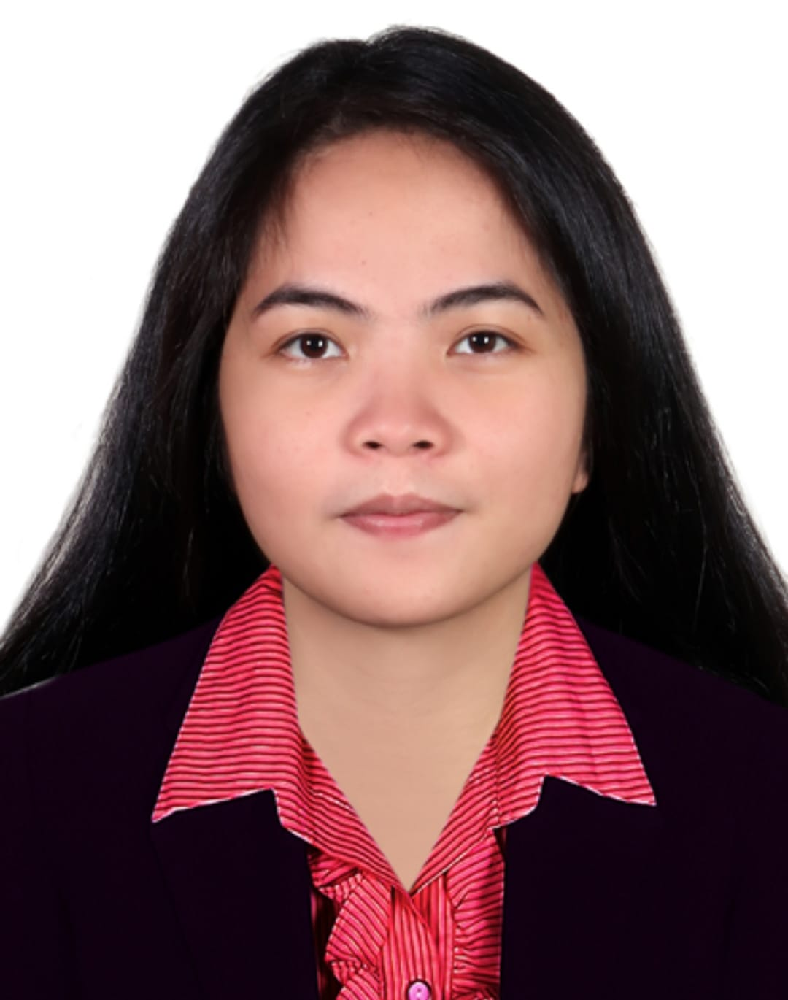

<center><center>
<p></p>
<br>
<br>
<br>


Hello! I am, Ginalyn Villato. I'm from Philippines currently in UAE, i didn't finish any college degree yet. If you are wondering why i didn't finish any degree i will give you a brief explanation why.
When i was young, i'm always wondering about everything. And that wonder will cause me fear about trying everything, i see myself as a weakest person that time. I can't try nothing at all, i can't finish anything because of my fear. I don't know what fear's me at that time, i can't understand myself.
That's why when i get in my mature age, i realised that i lost too much times because of my fears. The fear that i can't even understand where it's coming from.
After realising the time wasted in my life, i get up on my own, i tried to live independently, i face my fears hoping to overcome it. And yes there is always hope in everything, i overcame my fears.
I stopped doubting myself, but i never stop wondering about everything.

And now, i am still wondering what fits on me. I tried a lot of new experience to explore everything, i'd like to try everything now.
My fear's to myself is gone. I trust myself now more than anyone, i'm willing to learn everything that can help me grow as an individual.


That's why one day i decided to go to a book fair in Expo Centre Sharjah to explore something there. And there i saw the booth of House Of Wisdom, they introduce me about FabLab. Since then i started wondering about FabLab, and the day came that i finally inquired about having a workshop to their lab.
And now i am here introducing myself to you, as one of a student of Fab Academy. Experiencing FabLab is a wonderful experience, and i will take that experience for the future.
